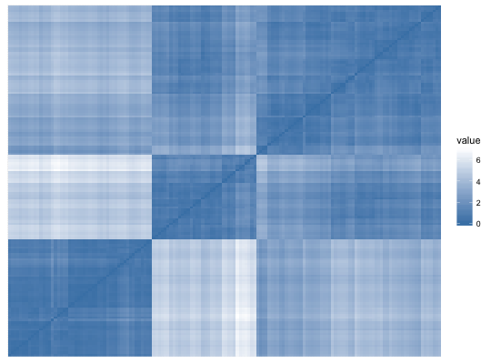
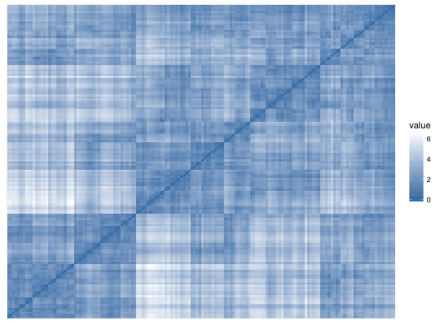

Before applying cluster methods, the first step is to assess whether the data is clusterable, a process defined as the assessing of clustering tendency. get_clust_tendency() assesses clustering tendency using Hopkins' statistic and a visual approach. An ordered dissimilarity image (ODI) is shown. Objects belonging to the same cluster are displayed in consecutive order using hierarchical clustering. For more details and interpretation, see http://www.sthda.com/english/wiki/assessing-clustering-tendency-a-vital-issue-unsupervised-machine-learning.
get_clust_tendency(data, n, graph = TRUE, gradient = list(low = "red", mid = "white", high = "blue"), seed = 123)
A list containing the elements:
- hopkins_stat for Hopkins statistic value
- plot for ordered dissimilarity image. This is generated using the
function fviz_dist(dist.obj).
Hopkins statistic: If the value of Hopkins statistic is close to zero (far below 0.5), then we can conclude that the dataset is significantly clusterable.
VAT (Visual Assessment of cluster Tendency): The VAT detects the clustering tendency in a visual form by counting the number of square shaped dark (or colored) blocks along the diagonal in a VAT image.
data(iris) # Clustering tendency gradient_col = list(low = "steelblue", high = "white") get_clust_tendency(iris[,-5], n = 50, gradient = gradient_col)#> $hopkins_stat #> [1] 0.1808518 #> #> $plot#># Random uniformly distributed dataset # (without any inherent clusters) set.seed(123) random_df <- apply(iris[, -5], 2, function(x){runif(length(x), min(x), max(x))} ) get_clust_tendency(random_df, n = 50, gradient = gradient_col)#> $hopkins_stat #> [1] 0.5153592 #> #> $plot#>